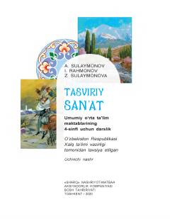

TS4-sinf o'quvchilari uchun tasviriy san'at fanidan darslik.
Mazkur darslik umumiy o'rta ta'lim maktablarining 4-sinf o'quvchilari uchun mo'ljallangan bo'lib, tasviriy san'atning turlari, janrlari va asosiy tushunchalarini o'rgatadi. Kitobda grafika, rangtasvir, haykaltaroshlik hamda ularning janrlari haqida batafsil nazariy va amaliy ma'lumotlar berilgan. O'quvchilarning estetik didini oshirish va ijodiy qobiliyatlarini rivojlantirishga xizmat qiladi.